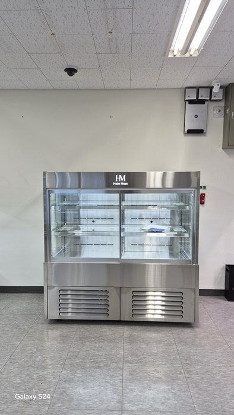

정육쇼케이스
정육쇼케이스 가격, 견적서에서 금액을 가르는 항목들

정육쇼케이스 가격은 길이와 깊이, 간냉식·직냉식 같은 냉각 방식, 앞유리 형태, 조명과 부가 옵션에서 대부분 갈립니다. 견적을 여러 곳에서 받으신다면 이 항목을 같은 조건으로 맞춘 뒤 비교하셔야 실제 차이가 보입니다.
안녕하세요. 정육점과 식육식당 쇼케이스를 직접 만드는 한성쇼케이스입니다.
정육점 창업 상담에서 가장 먼저 나오는 질문은 역시 "정육쇼케이스 얼마예요?"입니다. 그런데 같은 질문에 업체마다 금액이 크게 달라 어느 쪽이 비싼 건지 판단이 안 된다는 말씀도 많이 하십니다.
대부분은 견적서에 적힌 조건이 서로 달라서 생기는 차이입니다. 한쪽은 직냉식에 사각 유리, 다른 쪽은 간냉식에 곡선 유리라면 금액이 다른 게 당연하죠.
오늘은 정육쇼케이스 견적서를 받았을 때 어떤 항목이 가격을 움직이는지, 비교할 때 무엇을 맞춰 봐야 하는지 정리해 드리겠습니다.
1. 길이와 깊이가 기본값을 정합니다
정육쇼케이스는 가로 길이가 늘어날수록 유리, 프레임, 냉각 부품이 함께 커지기 때문에 금액의 기본 틀이 여기서 정해집니다.
진열할 부위 수와 매장 폭을 기준으로 필요한 길이를 먼저 정해 두시면 견적이 훨씬 정확해집니다.
깊이도 중요합니다. 고기를 넓게 펼쳐 보이게 하려고 깊이를 늘리면 진열은 풍성해지지만 뒤쪽 작업 공간이 좁아질 수 있습니다.
작업대와 저울 위치까지 함께 그려 보고 깊이를 정하세요.
견적을 받으실 때는 가로·세로·높이를 숫자로 적어 보내 주세요. "중간 크기"나 "옆 가게만 한 크기"처럼 말로 전달하면 업체마다 다르게 해석해 서로 다른 규격의 금액을 비교하게 됩니다.
- 판매할 부위 가짓수를 먼저 적어 보세요.
- 쇼케이스 뒤 작업 공간 폭을 남겨 두세요.
2. 냉각 방식에 따라 달라지는 금액과 운영비
간냉식은 팬으로 냉기를 순환시켜 내부 온도가 고르고 유리에 성에가 잘 끼지 않습니다. 대신 구조가 복잡해 직냉식보다 가격대가 높은 편입니다.
직냉식은 구조가 단순해 부담이 덜하지만 성에 관리가 필요합니다.
견적을 비교할 때 냉각 방식이 다르면 금액만 놓고 비교할 수 없습니다. 하루 종일 고기를 진열하는 정육점이라면 성에 때문에 유리가 흐려지는 시간, 제상 관리에 드는 수고까지 함께 놓고 보셔야 실제 비용이 보입니다.


3. 유리 형태, 조명, 옵션
앞유리가 사각형인지, 곡선형인지에 따라 가공 방식이 달라 금액 차이가 생깁니다. 곡선 유리는 고기가 넓고 먹음직스럽게 보이는 장점이 있어 매장 얼굴이 되는 메인 쇼케이스에 많이 쓰입니다.
조명은 고기 색을 살리는 핑크 계열을 많이 선택하시고, 저울 받침대나 내부 선반, 프레임 색상 같은 옵션도 금액에 반영됩니다.
꼭 필요한 옵션과 나중에 추가해도 되는 옵션을 나눠 두면 예산 조정이 쉬워집니다.
- 유리 형태: 사각형, 사선형, 곡선형
- 조명 색과 위치
- 저울 받침대, 내부 선반
- 프레임 색상과 소재
4. 금액 말고 꼭 같이 봐야 할 것
정육쇼케이스는 24시간 돌아가는 장비라 고장이 나면 진열한 고기를 버려야 할 수 있습니다. 그래서 견적서에 A/S 범위와 방식이 적혀 있는지, 지방이라면 가까운 곳에서 출장 수리가 가능한지를 반드시 확인하세요.
배송과 설치가 견적에 포함되는지도 업체마다 다릅니다. 반입 경로가 좁거나 계단이 있는 매장이라면 미리 알려 주셔야 설치 당일 추가 작업 없이 마무리할 수 있습니다.
체크리스트
- 필요한 가로 길이와 깊이
- 간냉식·직냉식 여부
- 앞유리 형태
- 조명 색과 부가 옵션
- A/S 범위와 출장 가능 지역
- 배송·설치 포함 여부
현장에서 자주 보는 경우: 좁은 1인 정육점, 중고와 맞춤 사이에서 고민
1인 창업이 늘면서 매장 크기가 제각각인 정육점이 많아졌습니다. 이런 사장님들은 예산 때문에 중고 정육쇼케이스를 먼저 알아보시다가, 협소한 공간에 맞는 매물이 없어 고민하시는 경우가 많습니다.
중고는 가격이 낮은 대신 수리를 보장받기 어렵습니다. 한성쇼케이스는 자체 제조공장에서 직접 만들어 납품하기 때문에 유통 마진을 줄여 매장 크기에 맞춘 제작을 제안드리고, 직접 만든 제품이라 사후관리도 바로 대응합니다.
처음엔 한 대로 시작했다가 같은 디자인으로 한 대를 더 추가해 진열 공간을 늘리는 방식도 많이 선택하십니다.




자주 묻는 질문
전화로 대략적인 정육쇼케이스 가격을 알 수 있나요?
길이, 냉각 방식, 유리 형태, 옵션을 알려 주시면 그 조건에 맞춰 견적을 안내해 드립니다. 매장 실측 치수가 있으면 더 정확합니다.
처음엔 한 대만 두고 나중에 늘려도 되나요?
가능합니다. 같은 디자인으로 추가 제작하면 나란히 놓았을 때 높이와 색이 맞아 한 줄로 이어진 진열대처럼 쓸 수 있습니다.
간냉식이 비싸다면 직냉식으로 시작해도 괜찮을까요?
판매량과 진열 방식에 따라 직냉식도 충분한 매장이 있습니다. 다만 성에 관리 수고와 유리 시야를 함께 따져 보시고, 고기 진열 비중이 큰 메인 쇼케이스라면 간냉식을 먼저 검토해 보세요.
매장 조건에 맞춰 만드는 한성쇼케이스
원하시는 제품 사진과 설치할 공간 사진만 보내 주셔도 매장에 맞는 구성을 추천해 드립니다.
- 전국 240여 개 A/S 전담 센터 운영
- 본사 대량 자재 매입으로 품질 대비 합리적인 가격
- 유럽제·삼성 냉각 콤프레셔 적용
- 국내 최초 쇼케이스 전문 디자이너 상주
매장 폭과 원하는 진열 구성을 알려 주세요. 실측과 견적을 안내해 드립니다.
031-986-2458